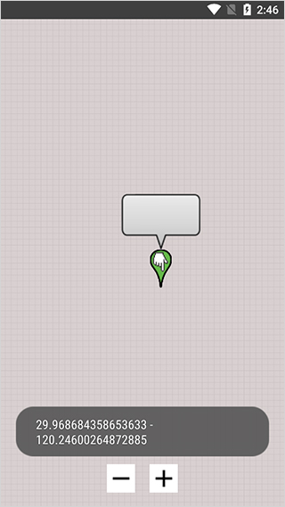

Blackbox 不 Root 多开的底层原理：一台手机如何同时运行两个世界
Blackbox 如何在无 Root 权限下实现应用多开、虚拟定位和设备改机？从进程隔离到环境注入，拆解这套安卓虚拟引擎的设计取舍与边界。
一台没有 Root 的安卓手机，能不能同时跑两个互相隔离的微信？能不能让一个应用以为自己在北京、另一个以为自己在上海？能不能让两个应用读到完全不同的设备型号和 IMEI？
Blackbox 给出的答案是：能。它的完整功能列表可以去Blackbox官网看看，而且从官方下载拿下来的安装包只有 5.7 MB，不需要刷机、不需要解锁 Bootloader、连注册账号都不用——装上点加号，把应用拖进来就完事。但这里面有一个容易被忽略的问题：它是怎么做到的？ 安卓从 5.0 开始就收紧了进程间的越权访问，到了 13 更是把沙箱焊死了。一个普通应用凭什么在自己的进程里凭空造出一个能跑别的应用的"小容器"？
这篇文章把这件事拆开来，看看 Blackbox 这套虚拟引擎的底层设计、它为什么选这条路、以及这条路的代价在哪里。
从一个进程到一个世界：VirtualApp 的遗产
Blackbox 不是凭空发明的东西。它的架构根源可以追溯到一个叫 VirtualApp 的开源项目——这也是它在官方仓库里反复提到 Apache 2.0 协议的原因。VirtualApp 的核心思路非常大胆：不修改系统，而是在自己的进程里模拟出一套完整的 Android 运行时。
想象一下你在自己家里搭了一个迷你城市：水电煤气都是你自己拉的管线，门牌号码自己编，警察来了也找不到真正的市政系统。Blackbox 做的事情类似——它不去跟 Android 系统的 ActivityManagerService 硬碰硬申请多开权限，而是把要运行的目标应用的 APK 解包、加载到自己的进程里，然后 Hook 掉这个应用所有跟系统交互的入口，把它们重定向到自己模拟出来的一套服务上。
这套模拟服务包括：
- 模拟的 PackageManager：告诉应用系统里装了哪些包、版本号多少、权限授予情况——Blackbox 可以让同一个应用在不同分身里读到不同的"已安装应用列表"；
- 模拟的 ActivityManager：接管应用的启动请求，在自己的进程空间里维护一套独立的任务栈；
- 模拟的 ContentProvider 路由：应用之间通过 ContentProvider 交换数据时，Blackbox 在中间做隔离，让不同分身之间的数据互不可见。
这套机制有一个关键细节：它跑在同一个 Linux UID 下面。 安卓的沙箱本质上是 Linux 的 UID 隔离——每个应用分配一个唯一 UID，进程间通信受 UID 权限限制。Blackbox 的聪明之处在于，它根本不试图突破 UID 边界，而是在同一个 UID 内部用代码层面的模拟再造了一层"逻辑沙箱"。这就是为什么它不需要 Root——Root 才能改 UID，而它根本不需要改 UID。
代价也从这里开始显现。同一个 UID 意味着：如果 Blackbox 本身有安全漏洞，所有装进它的应用都可能被一次性穿透；同时，某些对 Linux 层有强依赖的功能（比如访问 /proc/ 下的真实进程信息）是模拟不掉的，这就是为什么部分银行类应用能识别出虚拟化环境。
数据流向：一个请求在虚拟环境里的完整路径
为了把这件事讲清楚，拿"读取设备信息"这个具体场景走一遍数据链路。当一个装在 Blackbox 里的应用调用 Build.MODEL 想知道"我是什么手机"时，发生了什么？
- 应用发起调用：目标应用通过 Android SDK 的标准 API 请求设备型号；
- Blackbox 的拦截层介入：这个调用不会直接到达系统的
Build类，而是被 Blackbox 在加载应用时注入的 Hook 层截住； - 查虚拟身份表：Blackbox 内部维护一张映射表，记录"这个分身对应的虚拟设备参数是什么"——默认情况下所有分身共享一套预设值，这就是为什么很多应用能认出虚拟化环境（它们发现多个 Blackbox 分身读到完全一样的设备信息）；
- 返回虚拟值：Hook 层把映射表里的型号字符串塞回给应用，应用拿到的
Build.MODEL就不是真实手机的型号了。
设备改机功能（2.2.0 版本引入）本质上就是第三步的映射表可编辑——但官方选择了源码级硬编码而不是做用户界面，原因很务实：改机涉及的设备标识字段太多（IMEI、Android ID、Serial、硬件序列号……），而且不同安卓版本获取这些值的 API 路径不一样，做一个能覆盖所有机型的改机界面工作量大到不划算。对于普通用户来说，默认的虚拟设备信息已经够用了；对于开发者来说，改源码编译反而是最可控的路径。

虚拟定位走的也是同一条拦截链路，只是目标从设备信息换成了位置信息。Blackbox 每个分身单独维护一套 GPS 坐标，没有全局开关——这是它跟很多同类工具的关键区别。设计动机不难理解：多开场景下一号一地是高频需求，如果定位是全局开关，那想给不同分身设不同位置就得反复开关，体验很差。代价是管理成本上去了：分身多了之后哪个应用在哪个城市很容易记混，它的Blackbox文档甚至建议用户自己维护一张"应用→位置"对照表。
兼容性的本质：哪些能模拟，哪些模拟不了
Blackbox 的已知问题清单里列了一堆缺陷：ContentProvider 崩溃、静态广播失败、多进程缺陷……这些不是"Bug 没修"，而是这条架构路线的物理边界。
能模拟的部分，是 Android SDK 层面的调用——PackageManager、ActivityManager、LocationManager、Build 类这些都是 Java 层的 API，Hook 起来相对直接。但有两类东西是 Hook 不到的：
第一类是 Native 层调用。如果一个应用直接通过 JNI 调 C/C++ 代码去读 /proc/self/maps 或者 ioctl 系统调用，Blackbox 的 Java 层 Hook 根本拦不住。部分金融类和游戏类应用会用这种方式检测虚拟化环境。
第二类是 系统级进程间通信。Android 的 AMS、PMS 这些核心服务跑在独立的系统进程里，Blackbox 能模拟的是应用端看到的服务接口，但模拟不了系统进程的真实行为。ContentProvider 崩溃就是典型例子——两个分身的应用互相通过 ContentProvider 访问数据时，Blackbox 的路由层处理不了所有边界情况，尤其是跨进程访问时的权限校验逻辑。
官方对这些问题的态度很诚实：2.2.0 是最后一次公开发布（2022 年 8 月），之后维护就停了。PR 通道仍然开放，但合并取决于维护者是否还在活跃——Apache 2.0 协议允许任何人 Fork 自行维护。对于普通用户来说，这意味着它能用、好用，但不要指望官方快速跟进安卓 14、15 的新特性。
适合谁，不适合谁
把上面这些原理串起来，就能判断 Blackbox 的边界在哪里了。
适合的场景：需要隔离的多开账号（社交、电商、办公工具）、对设备信息一致性要求不高的测试场景、个人用途的虚拟定位需求。它的零门槛、零配置特性决定了"装上就能用"是它最大的竞争力——不需要懂技术就能上手。
不适合的场景：金融类应用的多开（Native 层检测基本绕不过）、对系统 API 完整性有强依赖的重型应用、企业级安全敏感场景。另外还有一个容易被忽略的点：所有分身共用同一个 Blackbox 进程，如果 Blackbox 本身被系统杀死，所有分身会一起退出——这跟安卓原生应用被杀死没区别，但如果某个分身正在做长任务（比如后台下载），其他分身会被连带中断。
最后说一个判断：Blackbox 这套"在应用进程内再造一个迷你 Android"的思路，在安卓的沙箱体系下是一个取巧但有效的工程实现。它没有突破系统安全边界，也没有假装自己能做 Root 才能做的事——它只是在允许的边界内，把一个进程能做的事做到了极致。这种务实的取舍，比那些吹得天花乱坠但实际上靠 Hook 系统服务、一升级安卓版本就废的方案要靠谱得多。如果你觉得这套思路有意思、想自行折腾或二次开发，项目的源码和资料在三个仓库都能拿到：GitHub、Gitee、GitCode，Apache 2.0 协议给足了自由。